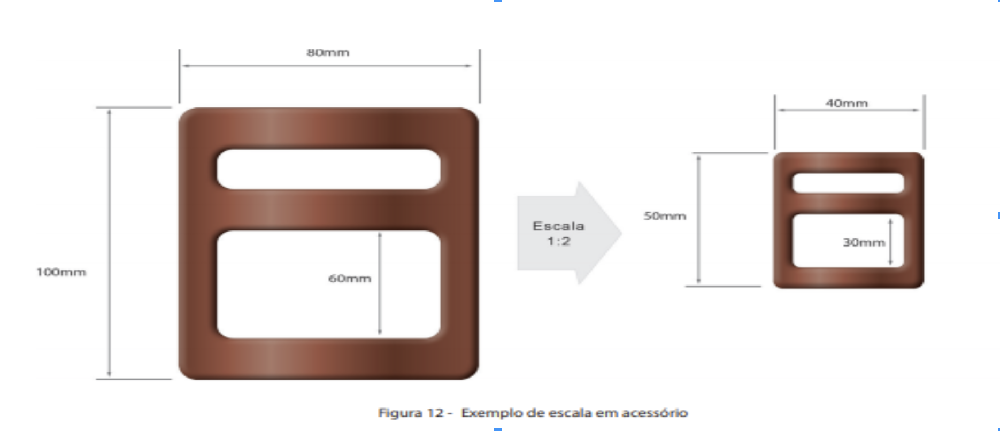

A ESCALA é uma forma de representação que mantém as proporções das medidas lineares do objeto representado.
Ao representar algo com a mesma semelhança formal, devemos observar a constante de proporcionalidade entre a representação e as dimensões reais do que está sendo representado.
Tomando como exemplo o mesmo acessório do capítulo anterior, se quisermos uma peça com metade do tamanho, então dividimos as medidas de suas dimensões pela constante de proporcionalidade 2. Sendo assim, uma escala 1:2 indica, por exemplo, que cada medida de 1 unidade no desenho, representa 2 unidades na medida real. Podemos representar um desenho de forma ampliada se multiplicarmos as dimensões reais pela constante de proporcionalidade.
